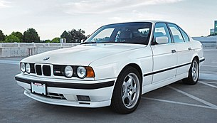

5 series e34

BMW E34 — модификация кузова BMW пятой серии, который выпускался с 1988
по 1996 год включительно. Всего было выпущено 1,333,412 автомобилей, из
них 124,656 универсалов. Автомобиль был выдержан в стиле традиционного
BMW, но в то же время содержал в себе современные технологии. Он был
также оснащён автоматическим контролем устойчивости (ASC) или тяги (ASC
+ T).